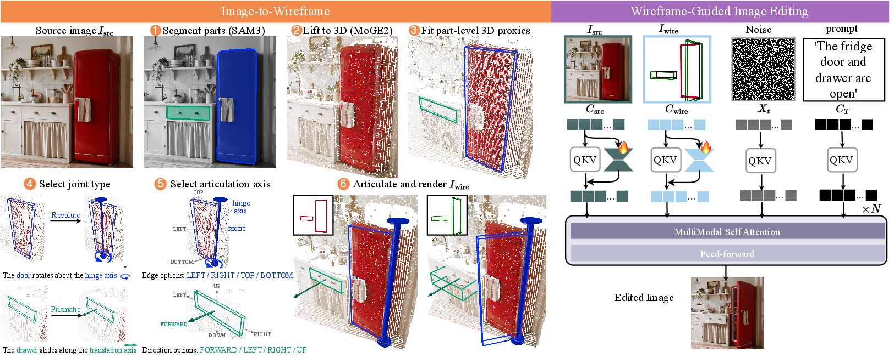
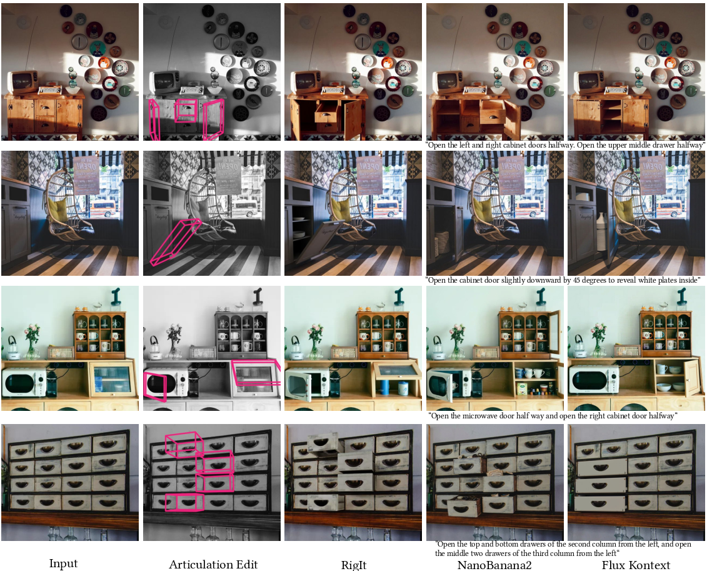
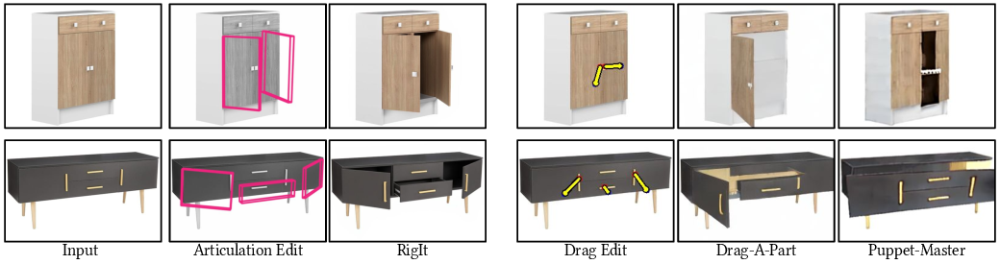
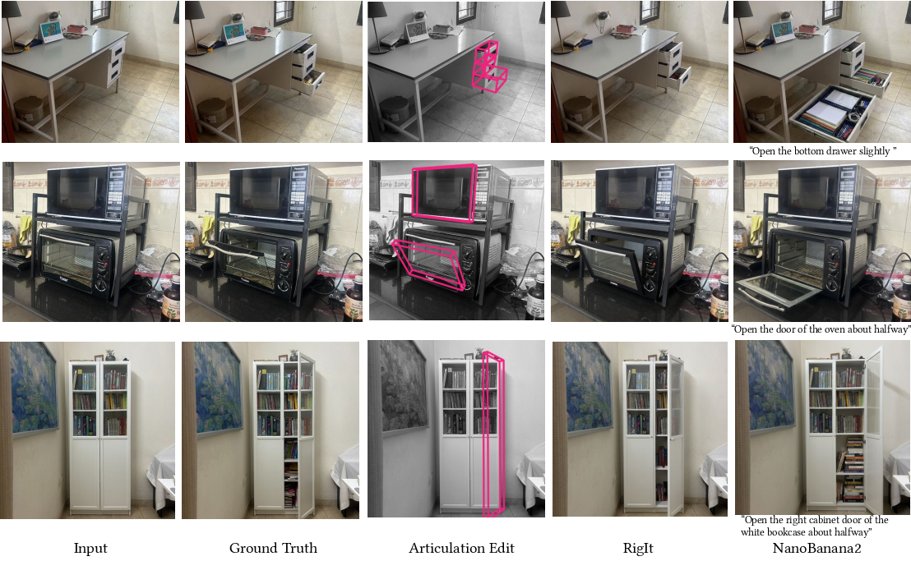
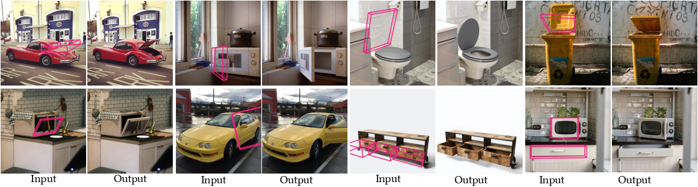

Editing articulated objects within a single image requires precise kinematic control—specifying exactly what moves, along which axis, and by how much. Existing text- and drag-based image editing methods provide only weak or ambiguous control over articulated object structure, often failing to localize the correct movable part or execute precise articulation extents, particularly under occlusion.
We propose RigIt, a novel framework that enables precise object articulation by directly “rigging” parts within a 2D image. Our method extracts the underlying geometry of a user-selected part to fit a 3D kinematic proxy, represented as an oriented bounding box (OBB). Users interactively manipulate this explicit 3D handle, which the system projects into a 2D wireframe conditioning signal. A fine-tuned diffusion model then processes this signal, guided by a localized articulation-aware loss, to generate photorealistic edits.
Remarkably, despite being trained exclusively on a small synthetic dataset of six categories, RigIt generalizes robustly to real-world, in-the-wild images and unseen object classes. Extensive evaluations on both synthetic and real-world benchmarks demonstrate that our approach significantly outperforms state-of-the-art text and drag-based baselines, achieving over 90% user preference for preserving articulation intent and scene consistency.

Left (Image-to-Wireframe). Given a source image Isrc, the user selects
which parts to articulate; ① SAM3 segments the selected regions and
② MoGe2 lifts the image to a metric point map. ③ For each
part, we fit an oriented 3D bounding box that serves as a kinematic proxy. A joint is attached to each
proxy by selecting ④ a type (revolute or prismatic) and
⑤ an axis from a small discrete label space, either through a lightweight editor or
via a vision–language model. ⑥ The user articulates the proxies to the target
state, and we project the source and target proxy edges into the image plane to render the wireframe
condition Iwire (insets).
Right (Wireframe-Guided Image Editing). The diffusion model receives
Isrc, Iwire, noise, and a text prompt as input. The source image
and wireframe are encoded as condition tokens, adapted by condition-specific LoRA modules (orange flames),
then concatenated with the noisy latent and text tokens and jointly processed by the FLUX mmDiT blocks to
synthesize the edited image.

Qualitative comparison against text-based baselines on in-the-wild internet images. For each row, from left to right, we show the original image, articulation wireframe, and results generated by RigIt, Nano Banana 2, and FLUX Kontext.

Qualitative comparison against drag-based baselines on images from the Amazon Berkeley Objects dataset. From left to right: input image, articulation wireframe and output produced by RigIt, input drag constraints, and outputs from Drag-A-Part and Puppet-Master.

Qualitative comparison against Nano Banana 2 on images from the CAO benchmark. For each row, from left to right, we show the original image, ground-truth image (target pair), articulation wireframe, and results generated by RigIt and Nano Banana 2.

Results of RigIt on diverse internet images. For each pair, the left image shows the input with the overlaid articulation wireframe, and the right image shows the edited output generated by RigIt.